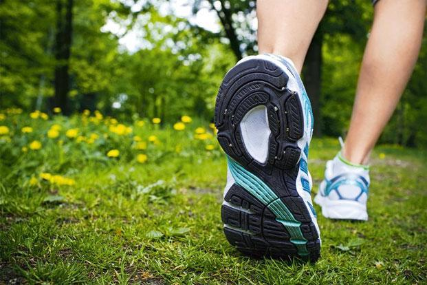

<div class="modal-dialog">
	<div class="modal-content">
		<div class="modal-header">
			<button type="button" class="close" data-dismiss="modal"
				aria-hidden="true">&times;</button>
			<h4 class="modal-title" id="appointmentModalLabel">Why you
				should be exercising right now</h4>
		</div>
		<div class="modal-body">
			<div class="row">
				<div class="col-lg-6 col-md-6 col-sm-6  blog-image">
					<br />
					<h5>During office breaks, go for a walk instead of grabbing a
						coffee or doughnuts</h5>
				</div>
				<div class="col-lg-6 col-md-6 col-sm-6 ">
					<h5>
						Published in <a
							href="http://www.livemint.com/Leisure/vGEKlD91W1dcBifQO123UJ/Why-you-should-be-exercising-right-now.html" target="_blank">Mint-Leading Business Newspaper</a>
							<br><i>Mon, Nov 24 2014. 08 05 PM
						</i>
					</h5>
					<p>Music helps reduce stress and can enhance your sense of
						well-being</p>
					<ul class="shareIcons">
						<li><a href="https://twitter.com/DrSujWell" target="_blank"><i
								class="fa fa-twitter"></i></a></li>
						<li><a href="https://www.facebook.com/wellnessbydrsujata" target="_blank"><i
								class="fa fa-facebook"></i></a></li>
						<li><a
							href="https://www.linkedin.com/profile/view?id=12822870&authType=NAME_SEARCH&authToken=yqYt&locale=en_US&trk=tyah&trkInfo=clickedVertical%3Amynetwork%2Cidx%3A1-1-1%2CtarId%3A1436516597183%2Ctas%3Asujata%20kelk" target="_blank"><i
								class="fa fa-linkedin"></i></a></li>
					</ul>
				</div>

			</div>
			<div class="row">
				<div class="col-lg-12  blog-content">
				
					<p>S Ravi, 49, who lives in Washington, DC, US, writes in an
						email interview: “In 2011, I was diagnosed with both high blood
						pressure and type 2 diabetes. For a person who led a very active
						life with no history in family, was vegan, and who took pride in
						being fit, the diagnosis came as a shock. Not wanting to start
						taking medication right away I started with a lifestyle change. It
						was not just about the revision of my diet but also about walking
						whenever I could, every single day. After several months, I found
						that my fasting blood sugar had come down to the prediabetes
						range.”</p>
					<p>Prediabetes is a condition where the person’s blood sugar
						levels are higher than normal but not high enough to be diagnosed
						as diabetes. “Since then I have been consistent with my walks and
						now walk up to 5 miles (around 8km) daily. I don’t need medication
						for my blood sugar yet and am hoping that I won’t need it in the
						near future either,” writes Ravi.</p>
					<p>Many people with prediabetes get diagnosed with diabetes
						within a decade. But Ravi is unlikely to be one of them as long as
						he sticks to his diet and exercise regime, says Shashank Joshi,
						consultant endocrinologist, Lilavati Hospital, Mumbai. “I have
						many such patients who have successfully been able to keep
						diabetes at bay with a disciplined lifestyle. It requires
						motivation and discipline but can be done.” In other words, it’s
						difficult but doable.</p>
					<p>
						And while walking 5 miles every day may seem a lot, the new
						physical activity guidelines for healthy Indians, published in
						2012 in the <i>Diabetes Technology And Therapeutics</i> journal,
						suggest 60 minutes of a combination of moderate-intensity aerobic
						activity, work-related activity and muscle-strengthening
						exercises. In comparison, the American Heart Association, a
						non-profit, suggests just 30 minutes of aerobic exercise five
						times a week, plus two days of strength training, for healthy
						Americans, essentially white Caucasians.
					</p>
					<p>So why is it that Indians need to exercise more than white
						Caucasians? It turns out that we lead more sedentary lives and eat
						a more energy-dense diet than our forefathers did. Doctors and
						researchers believe that a sedentary lifestyle plays a critical
						role in the development of type 2 diabetes and cardiovascular
						heart disease among Indians.</p>
					<p>
						And this isn’t a recent theory, it has been around for a long
						while. According to a 2013 paper published in the <i>Journal
							Of The Association Of Physicians Of India</i>, the <i>Charaka
							Samhita</i>, a foundational text of Ayurveda, has over 120 <i>shloka</i>s
						or aphorisms on exercise. Each chapter of the text prescribes
						certain kinds of exercise for certain diseases and clearly states
						that exercise can minimize the symptoms of, or even cure, over 20
						different diseases, including obesity and diabetes.
					</p>
					<p>Western medical literature has established that regular
						exercise helps reduce blood pressure, maintain a healthy weight
						and increase the levels of HDL cholesterol, the kind of
						cholesterol that is cardio-protective. HDL scavenges the harmful
						cholesterol and prevents it from damaging the heart blood vessels.
						Regular exercise is also great for managing work-related stress
						because it helps eliminate stress hormones from the bloodstream,
						thereby reducing the harmful effects of stress, improves
						circulation of nutrients, induces fatigue (therefore improving
						sleep), and regulates appetite.</p>
					<p>Stress can predispose us to a host of illnesses, including
						diabetes and heart disease. The mind can get used to gradual
						increases in stress and “forget” that it is stressed. The person
						continues to function as if nothing was the matter, but it can
						precipitate disease. It’s a bit like the “boiling frog”
						experiment, often used as a metaphor to explain how coping with
						gradual change can have disastrous consequences.</p>
					<p>The experiment goes something like this: When a frog is
						thrown into hot water, it jumps out immediately, but when the same
						frog is put in water that is heated gradually, it boils to death.
						While the experiment isn’t entirely accurate, it makes the point
						quite effectively.</p>
					<p>So what kind of exercise do we Indians need to do for an
						hour each day? Anoop Mishra, director, diabetology, Fortis Flt Lt
						Rajan Dhall Hospital, Vasant Kunj, New Delhi, says the exercise
						needs to be broken down into 30 minutes of moderate-intensity
						aerobic activity like brisk walking or biking, 15 minutes of
						work-related exercise like taking the stairs in the office
						building or walking during breaks, and 15 minutes of
						muscle-strength training with light weights. If that sounds like
						too much of a prescribed plan to fit into a busy life, he
						suggests, “Change the way you take a break in the office.” At
						work, you could take a walking break instead of a coffee or
						doughnut break.</p>
					<p>
						A study published in the journal <i>Applied Physiology,
							Nutrition And Metabolism</i> in July shows that taking frequent
						active breaks of 5 minutes from work can manage blood insulin
						levels the same way that sustained 30 minutes of moderate exercise
						can when the same amount of energy is expended. When asked about
						the research results, Dr Mishra says: “Yes this may be true, but
						for us Indians, we must do both. Be as active as possible in the
						workplace, and exercise outside too.”
					</p>
					<p>
						American explorer and educator Dan Buettner has researched the way
						the world’s healthiest and longest-living people go about their
						lives. In his book, <i>The Blue Zones—9 Lessons For Living
							Longer From The People Who’ve Lived The Longest</i>, Buettner writes
						that walking is a simple exercise that all centenarians do, almost
						daily.
					</p>
					<p>I am going to put on my sneakers and go for a walk now.</p>
					<p>Sujata Kelkar Shetty, PhD, is a wellness consultant and a
						clinical scientist trained at the National Institutes of Health in
						Bethesda, US</p>
				</div>

			</div>
		</div>

	</div>
</div>